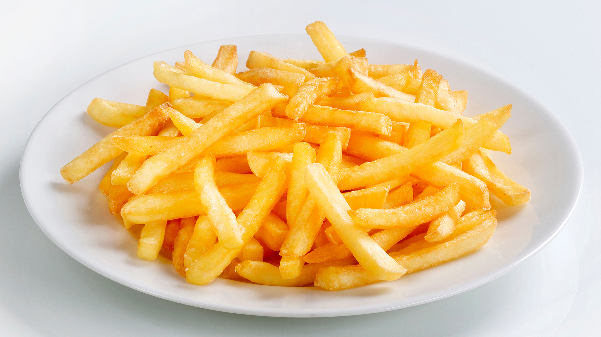

Pizza is my all time favorite food. It was not made by the Italians, but rather, by the Chinese.
world's largest pizza
These are just amzing. You can puchase these delicious miniature meat bundles at any fast food chain, which is both a blessing and a curse.
world's largest chicken nugget
About as American as baseball itself. Cooking up some dogs is one of my favorite things to do.
ballpark brand hotdogsThese are about as American as the aforementioned hotdog is, but these are slightly further down the list. No disrespect.
worlds largest hamburger
No, they are not from France.
worlds largest french fry Pasta is one of the greatest things since sliced bread. You can put cheeses and sauces all over this bad boy to create the flavor of your choosing.
history of pasta
You can put hem in the oven, a microwave, a deep fryer, or evn an air fryer. Prime eating.
worlds largest chicken wing
Cheesy, gooey deliciousness. My favorite is Kraft.
different types of mac and cheeseThese little miny guys are super tasty and I heart them.
different types of taquitosThese little small baby pizzas will always hold a special spot in my heart.
bagel bites website